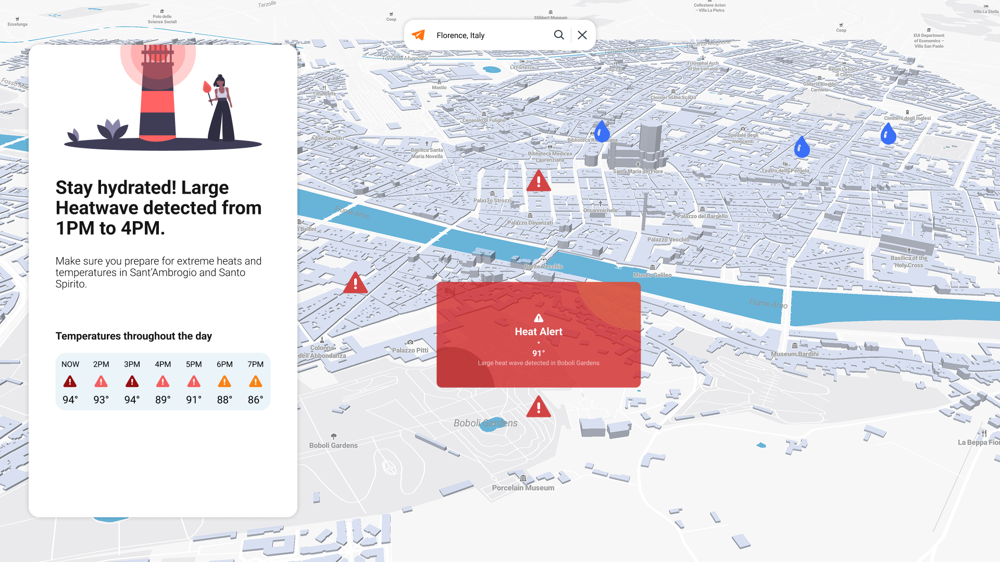
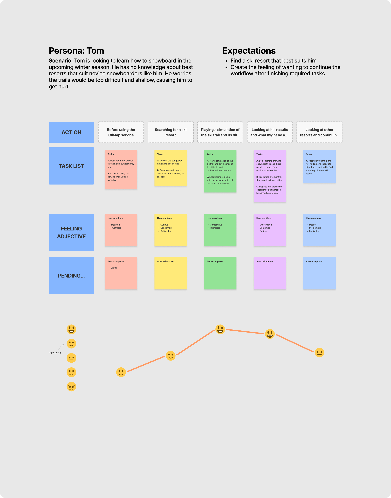
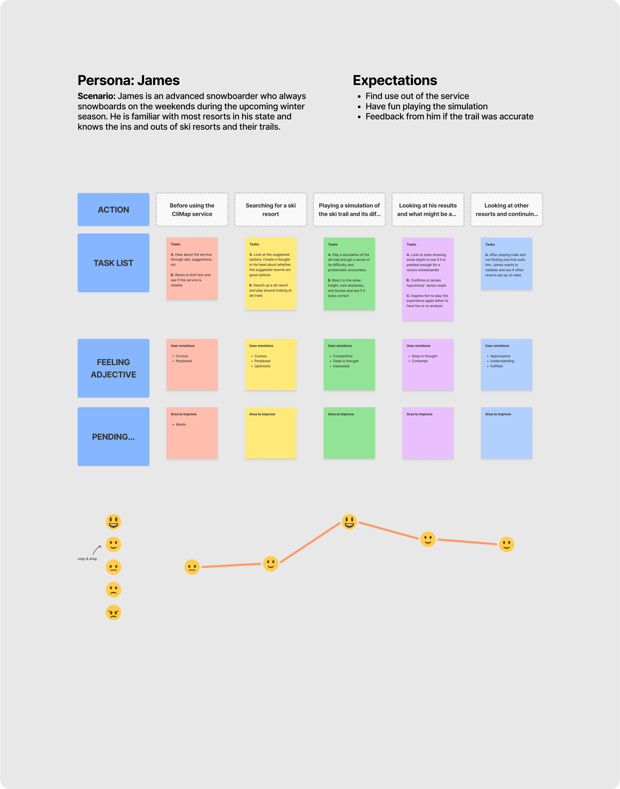
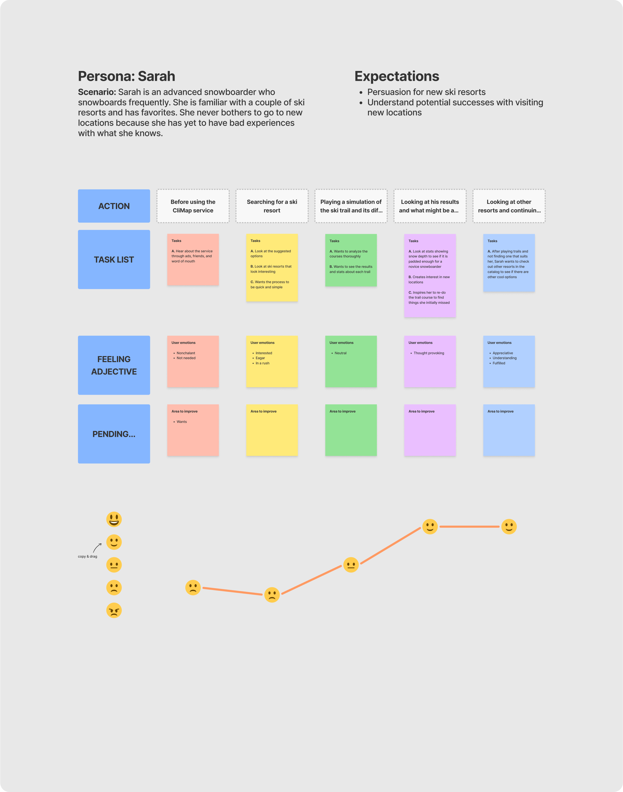
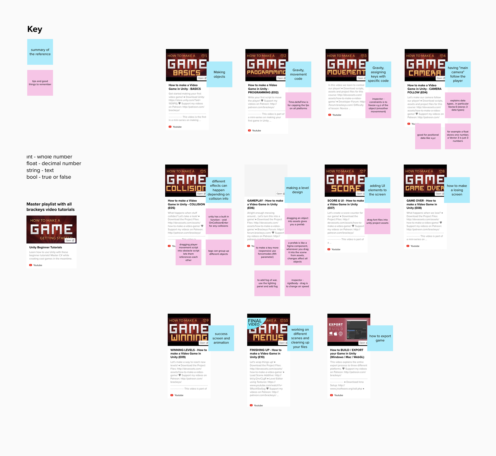
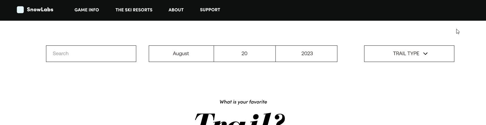
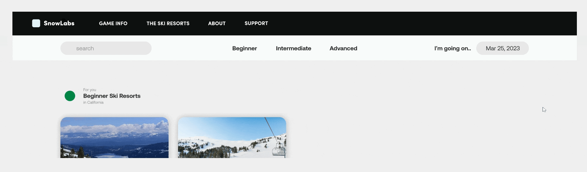
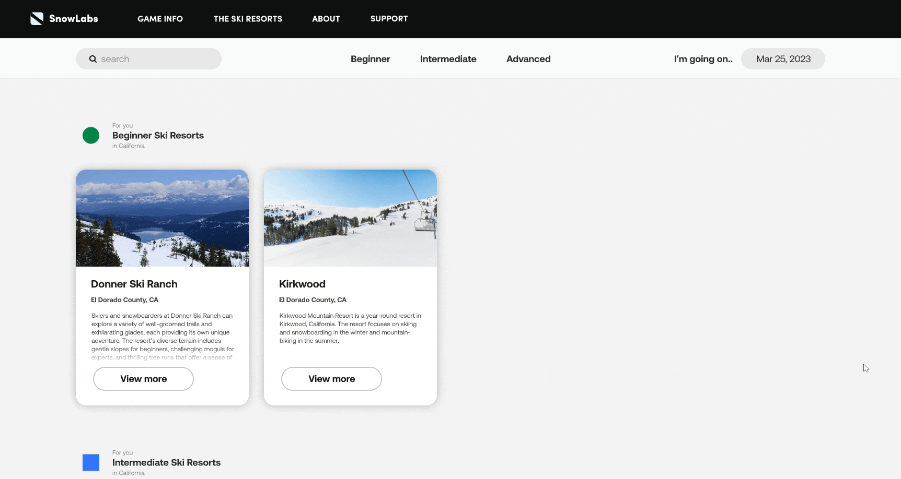
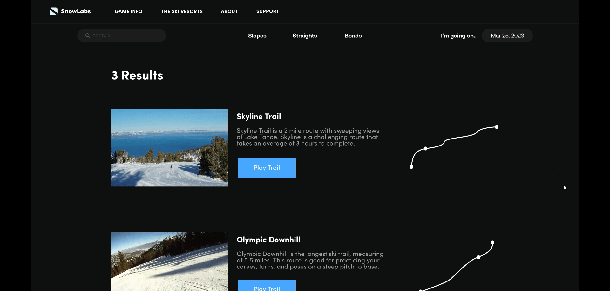

Planning Snowboard Trips Through Playable Resort Previews
Learning to snowboard for the first time is overwhelming. Before stepping onto the mountain, beginners have to choose a resort that matches their ability, find gear that fits both their budget and skill level, and understand the weather and snow conditions that can dramatically change the experience. Most people rely on Google searches, trail maps, reviews, and scattered forum posts, but these resources rarely communicate what the mountain will actually feel like.
As a result, many first-time riders arrive unprepared, spend more time overcoming unexpected challenges than learning, and leave wondering if snowboarding simply is not for them.
SnowLabs was designed to bridge that gap by allowing beginners to make a gameplan before they ever leave home.
THE PROBLEM
Existing trip planning tools give beginners data. Maps. Reviews. Weather forecasts. What they do not give beginners is confidence. There is a fundamental difference between knowing a trail is rated intermediate and knowing whether you personally are ready for it.
That gap between information and experience is where hesitation lives. And hesitation, for a first-time snowboarder, often means abandoning the hobby before it ever starts.
The question driving this project was simple: what if you could experience the mountain before you ever booked the trip?
THE PIVOT
Five months into the project, I hit a wall. The original version of SnowLabs was a functional travel planner: enter a location, get weather forecasts, plan accordingly. It worked. It was also completely uninspired and solved nothing that existing tools did not already solve.
I did not want to ship something forgettable. So I went looking for a different perspective.
I reached out to game designers on LinkedIn and eventually connected with a designer at Rockstar Games. That conversation changed everything.
"This project is a really cool opportunity to learn a new technical skill that makes you stand out as a UX Designer. And you love video games too so this could be a great chance to get into Game Design."
That was the spark. Instead of a predictive travel planner, SnowLabs became a playable experience, a hybrid of UX and game design that would let riders simulate what a trip might actually feel like before committing to it.

RESEARCH
To make sure the pivot was grounded in real needs and not just a passion project, I interviewed 30 snowboarders and skiers over four weeks. Three distinct archetypes emerged from those conversations.
The Beginner
Excited but intimidated. With little snowboarding knowledge, beginners worried about accidentally choosing resorts that were too difficult. Their only current solutions involved hours of Googling or relying on friends who might not remember what beginner felt like.
The Expert
Weekend regulars who knew every resort and route. They were not looking for basic information. They wanted smarter ways to optimize their trips.
The Loyalist
Frequent riders who stuck to familiar resorts. They rarely ventured to new locations for fear of wasting a trip on a disappointing experience.
The Beginner archetype drove the entire design direction. Their problem was not a lack of information. It was a lack of experiential preview, a way to know what a mountain would feel like before showing up unprepared.
I used the Jobs to Be Done framework to map the full rider journey across all three archetypes. This clarified the product's core purpose: give riders confidence, choice, and a way to preview the experience before committing to it.



DESIGN AND DEVELOPMENT
This is the part of the project I am most proud of and the part that scared me most going in. Building a playable simulation meant learning Unity and C#, two tools I had never touched before.
I documented my learning in real time, from secondary research and brainstorming in Mural to Unity terrain experiments and coding exercises. The boards and notes are not polished. That was intentional. They show how I actually think when I am learning something new: organized enough to make progress, messy enough to stay curious.

Teaching myself a game engine while simultaneously designing a UX product was the hardest design challenge I have faced. It was also the most valuable. Understanding how Unity renders environments, how C# scripting drives dynamic conditions, and how game designers think about player experience gave me a fluency I could not have gotten any other way. I can now sit in a room with engineers and speak their language, not just describe what I want, but understand what it costs and what it takes to build.
TESTING AND ITERATION
At the California College of the Arts 2023 Senior Showcase, I ran moderated usability tests with visitors attending the event. I guided participants without giving them answers and asked them to narrate their thought process out loud as they moved through the experience.
One pattern showed up immediately and consistently. Testers were instinctively drawn to the center of the screen. Their eyes and their first interactions always landed there first, regardless of where I had placed the primary controls.
The old design had the date selector centered and the difficulty filter options off to the side. Users were finding the calendar first and the filters second, which meant they were setting dates before they even knew what difficulty level they were filtering for. The workflow was backwards.

I repositioned the difficulty filter options to the center and moved the calendar to the right. I also simplified the menus to reduce unnecessary clicks on key interactions.

The result was a more intuitive flow where users naturally filtered by difficulty first, then selected dates, which matched how they actually thought about planning a trip.
FINAL DESIGN
Choosing a Resort
Users search by resort name or select from a curated list. Filters match resorts to skill level, and date selection directly influences the in-game conditions they will experience.

Playing a Trail
After selecting a resort, users land on the trail results page. Changing the date dynamically updates in-game conditions. Selecting a date with heavy snowfall slightly impairs visibility, giving riders a realistic preview of trail difficulty before committing to the trip.

Gameplay
After choosing a trail, users enter the snowboarding simulation. The game mirrors the exact conditions of the date they selected. Dark skies, heavy snowfall, and reduced visibility are all rendered dynamically. Riders leave with a real sense of whether they are ready for that mountain on that day.
REFLECTION
SnowLabs started as a travel planner and became something I never expected to build: a playable UX product that required me to learn game development from scratch in the middle of a senior thesis.
If I started over, I would begin learning Unity earlier in the process. Teaching myself a new tool while simultaneously trying to design and test meant that some of my early prototypes were limited by my technical ability rather than my design thinking. More runway with the engine would have meant more ambitious gameplay features in the final product.
What this project taught me goes beyond SnowLabs specifically. Every project I take on, I want to understand the tools and constraints of the people building what I design. SnowLabs gave me that in the most direct way possible: I became the builder. I wrote the code. I rendered the terrain. I understood firsthand why certain design decisions are easy to implement and why others cost weeks of engineering time. That perspective makes me a better collaborator, a better communicator, and a better designer.
NEXT STEPS
- Expanding the resort library beyond the initial curated list to include real-time trail and weather data integration.
- Building a mobile version of the experience for riders who plan trips on the go.
- Adding a social layer where riders can share trail previews and trip plans with friends before committing to a resort together.